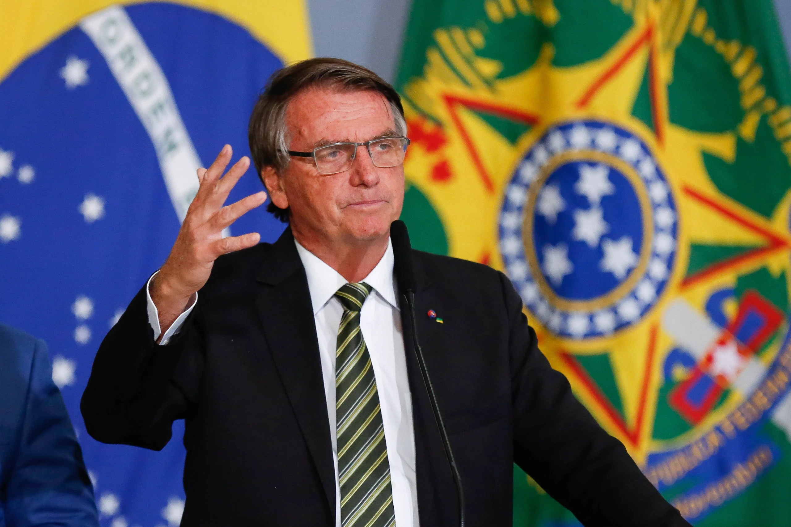

Jair Mesias Bolsonaro
Caçador de ladrão e o salvador da pátria amada
sobre mim:
Jair Messias Bolsonaro GOMM (Glicério,[nota 3] 21 de março de 1955) é um militar reformado e político brasileiro, atualmente filiado ao Partido Liberal (PL). É o 38.º presidente do Brasil desde 1.º de janeiro de 2019, tendo sido eleito pelo Partido Social Liberal (PSL). Foi deputado federal pelo Rio de Janeiro entre 1991 e 2018. Nasceu no município de Glicério, no interior do estado de São Paulo, mas morou em várias outras cidades paulistas ao longo de sua infância. Em 1966, sua família se estabeleceu em Eldorado, no Vale do Ribeira, onde passou a adolescência com seus cinco irmãos.